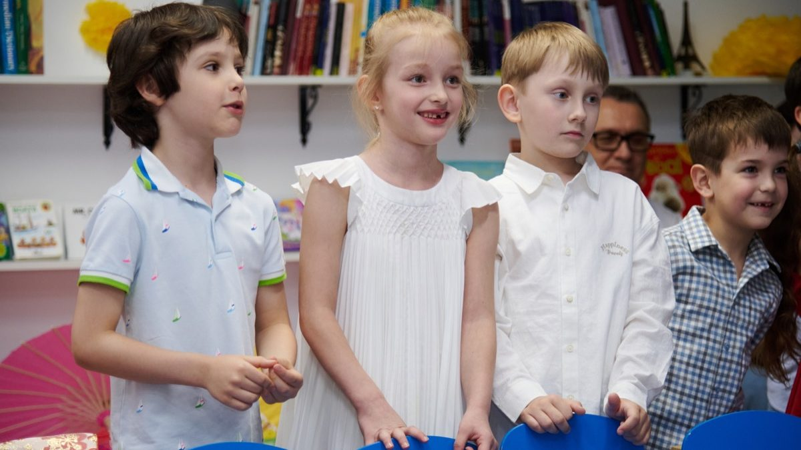
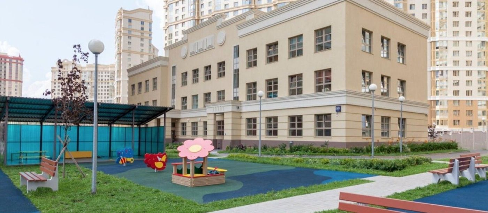
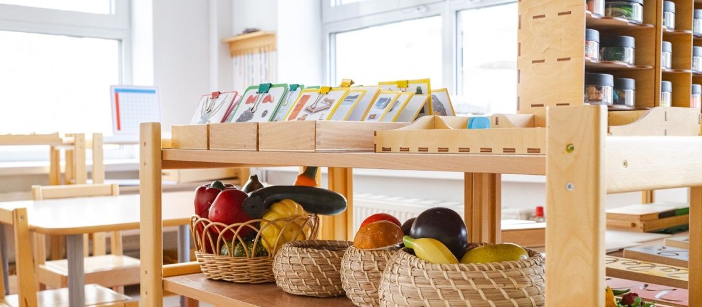

Как понять, что перед вами хороший педагог: девять признаков

От учителя начальных классов и воспитателя группы зависит больше, чем от программы, здания и рейтинга школы вместе взятых. При этом родители выбирают школу неделями, а на педагога смотрят пять минут на экскурсии. Ниже девять признаков, по которым можно отличить сильного педагога за один открытый урок или один разговор, и три вещи, которые ничего не говорят о качестве, хотя выглядят убедительно.

- Смотрите на то, как педагог общается с детьми. Дипломы подождут.
- Главные признаки: видит каждого, задаёт вопросы вместо ответов, спокойно относится к ошибкам, держит границы без крика.
- Стаж и регалии важны меньше, чем то, что происходит на уроке прямо сейчас.
01Что не говорит о качестве
Сначала о том, на что не стоит опираться.
Тридцать лет в школе могут означать тридцать лет роста, а могут один год, повторённый тридцать раз. Проверяйте, что педагог делает сейчас. Сколько лет он это делает, вопрос второй.
Высшая категория присваивается по документам и открытым урокам, которые готовят заранее. Это показатель формальной подготовки, не ежедневной работы.
Педагог, который умеет очаровать родителей за пять минут, не обязательно умеет работать с детьми шесть часов. Иногда наоборот.
02Девять признаков сильного педагога
Знает каждого ребёнка по имени и по особенностям
На открытом уроке послушайте, как педагог обращается к детям. Хороший педагог называет по имени всех, включая тех, кто руку не поднимает. Он знает, кому нужно повторить дважды, кого нельзя вызывать первым, кто сегодня не выспался. В группе из двенадцати это заметно сразу.
Задаёт вопросы чаще, чем даёт ответы
Слабый педагог объясняет. Сильный спрашивает так, чтобы ребёнок дошёл сам. «Как ты думаешь, почему не получилось?» вместо «Здесь ошибка, исправь». Посчитайте на уроке: сколько вопросов задал педагог и сколько дети. У сильного педагога дети спрашивают.
Спокойно относится к ошибкам
Ребёнок ошибся у доски. Что делает педагог? Тревожный вариант: вздыхает, исправляет сам, вызывает следующего. Хороший: «Интересно, а как ты к этому пришёл?» Ошибка становится материалом урока. Дети такого педагога не боятся отвечать.
Держит границы без крика
Дисциплина в классе есть, но она держится не на голосе. Педагог не повышает тон, но дети слышат его с первого раза. Это результат договорённостей и последовательности: одинаковые правила каждый день, одинаковые последствия. Если педагог кричит на открытом уроке, представьте, что происходит в обычный день.
Даёт время подумать
После вопроса делает паузу. Три-пять секунд тишины, которые слабый педагог не выдерживает и отвечает сам. За эти секунды медленный ребёнок успевает сформулировать. Это один из самых надёжных признаков, и его видно на любом уроке.
Замечает тех, кто молчит
В любом классе есть дети, которые не поднимают руку. Сильный педагог подходит к ним, спрашивает тихо, даёт задание по силам. Слабый работает с пятью активными и не видит остальных семь.
Говорит с родителями о ребёнке
Спросите педагога о своём ребёнке после диагностики или пробного дня. Хороший педагог скажет что-то конкретное: «внимательно слушает, но боится ошибиться в письме», «быстро считает, отвлекается на соседа». Слабый ответит про программу и требования.
Учится сам
Спросите, что педагог читал или проходил за последний год. Не для галочки, а что реально поменял в работе. Педагог, который двадцать лет ведёт урок по одному конспекту, ответить не сможет.
Дети идут к нему на перемене
Самый простой тест. Постойте в коридоре на перемене. К хорошему педагогу дети подходят с вопросами, рассказами, показать рисунок. От плохого держатся подальше. Дети не умеют это скрывать.

03Как проверить всё это до поступления
Хорошая школа разрешит. Тридцати минут достаточно, чтобы увидеть признаки 1-6.
Ребёнок проведёт день в классе, и вечером вы увидите признак 9 по его рассказам.
Признак 7 проявится за пять минут.
про конкретного педагога, без общих вопросов о школе.
04Что важно в саду, а что в школе
Для воспитателя в саду главнее признаки 1, 4, 6 и 9: видит каждого, держит границы спокойно, замечает тихих, дети к нему тянутся. Ребёнок трёх лет не оценит методику, но точно почувствует, спокоен ли взрослый рядом.
Для учителя начальных классов добавляются 2, 3 и 5: вопросы, отношение к ошибке, пауза на подумать. Именно здесь формируется, будет ли ребёнок бояться школы.
Для предметника в средней и старшей школе на первый план выходят 2 и 8: умение вести к ответу и собственный рост. Подросток чувствует, когда учитель сам не интересуется предметом.
Педагоги каждого кампуса представлены на сайте с образованием и опытом. Перед выходом в группу или класс все проходят подготовку по методике сада или школы. В начальной школе с классом работают учитель и тьютор, о роли тьютора рассказали отдельно. Посидеть на уроке до поступления можно, договорившись на экскурсии.
05Частые вопросы
Такое бывает: сильный педагог может не совпасть с конкретным ребёнком по темпераменту. Поговорите с педагогом прямо, дайте месяц. Если не наладилось, обсуждайте со школой перевод.
Нет, если он проходит признаки 1-6. Молодые педагоги часто внимательнее к каждому ребёнку и быстрее учатся.
В большинстве частных школ можно попросить конкретный класс, если есть места. Спросите на экскурсии.
06Что дальше
Приходите на экскурсию в учебный день и попросите посидеть на уроке в классе, куда пойдёт ваш ребёнок. Телефон +7 (495) 152-22-21.